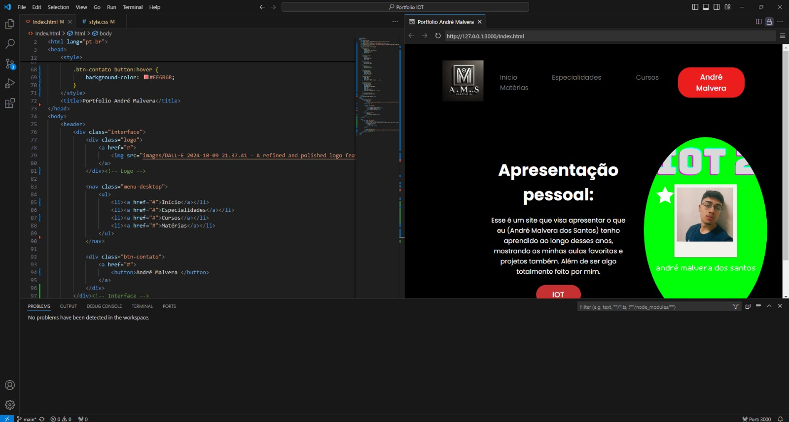
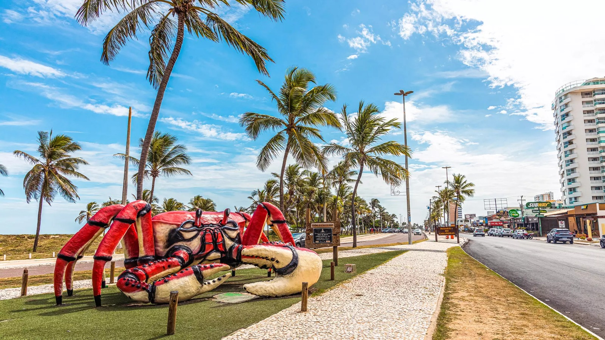
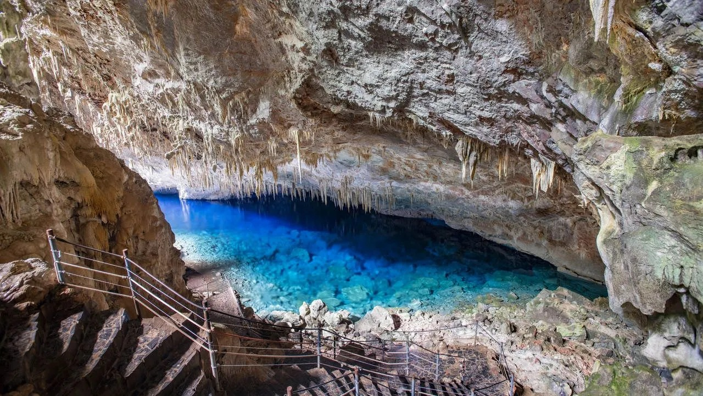
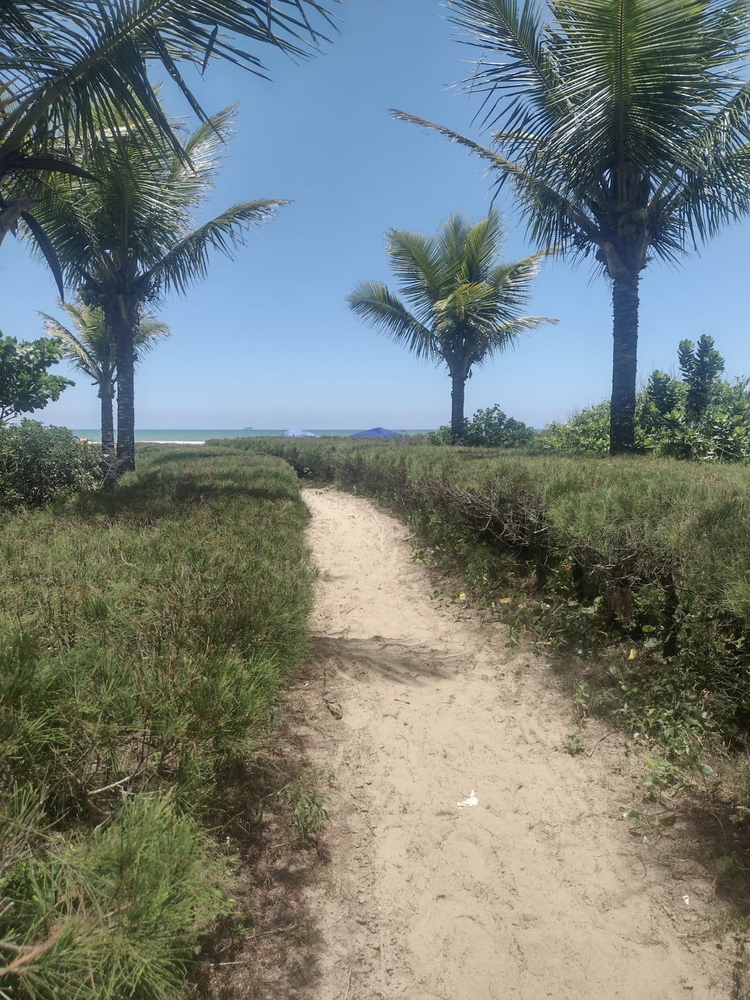
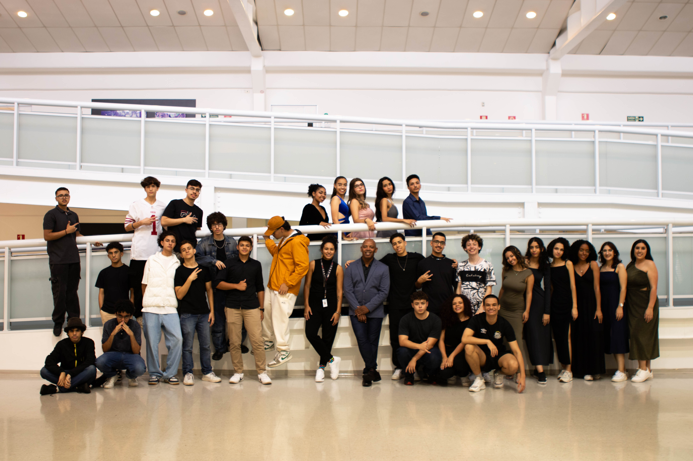

Hobbies e Curiosidades
Fotografia
Quando não estou estudando, curto bastante jogar jogos online no dia a dia.

Programação
Quando não estou gastando meu tempo com coisas divertidas como jogar, eu gosto de aprender. Por isso, sempre busco estudar programação.

Viagens
Gosto bastante de viajar, principalmente pelo Brasil. Já viajei por quase todo o nordeste.



Informações Pessoais
Meu nome é André Malvera dos Santos e estou em busca de aprender e aplicar novas tecnologias e ideias. O ensino médio tem sido um período de grandes desafios, mas também de muita realização. Adoro aprender sobre novas áreas e estou constantemente buscando maneiras de me aprimorar.
Reflexão sobre o Ensino Médio
O ensino médio foi um período de autoconhecimento e crescimento. Aprendi a valorizar tanto os momentos de dificuldades quanto os de superação. O que mais me marcou foi perceber como as experiências, mesmo as mais desafiadoras, moldam nossa trajetória e nos preparam para o futuro. Cada etapa, cada tarefa, trouxe algo novo.
Tarefas Favoritas e o que Aprendi
Minhas tarefas favoritas foram o Maracatu Rural e a criação do site de IoT, juntamente com os projetos de Arduino. Essas tarefas foram bem desafiadoras e exigiram muito esforço, mas o resultado final foi excelente. Através dessas experiências, aprendi muito sobre trabalho em equipe, resolução de problemas e sobre a aplicação prática de conceitos que antes pareciam distantes.
Minha Escola e Sala
A sala de aula sempre foram o lugar onde eu mais aprendi. Foi nela que ganhei mais conhecimento e me deparei com novos desafios.
